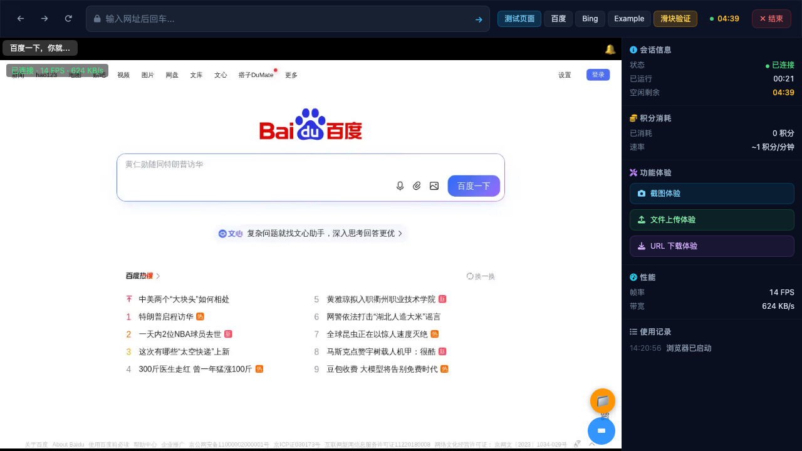
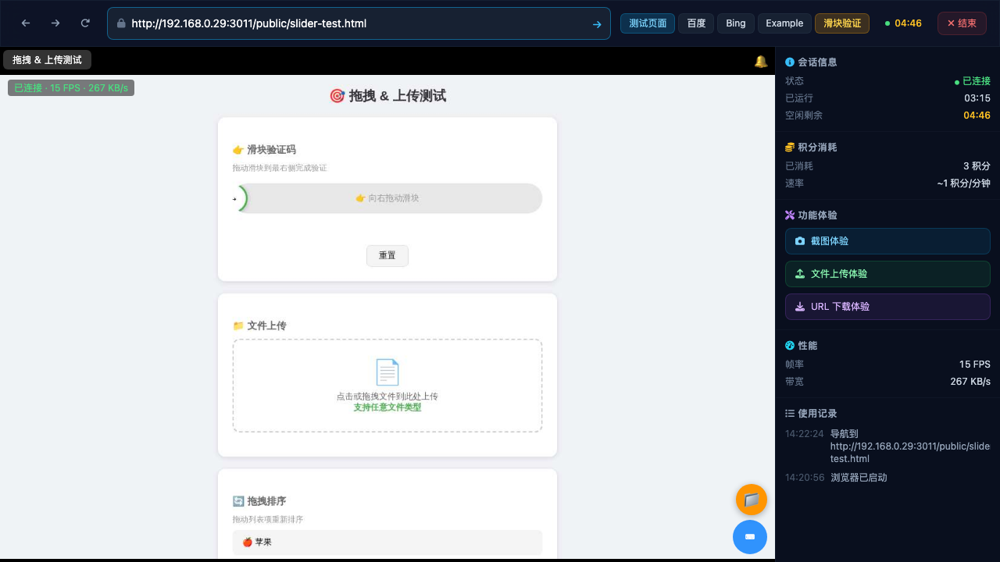
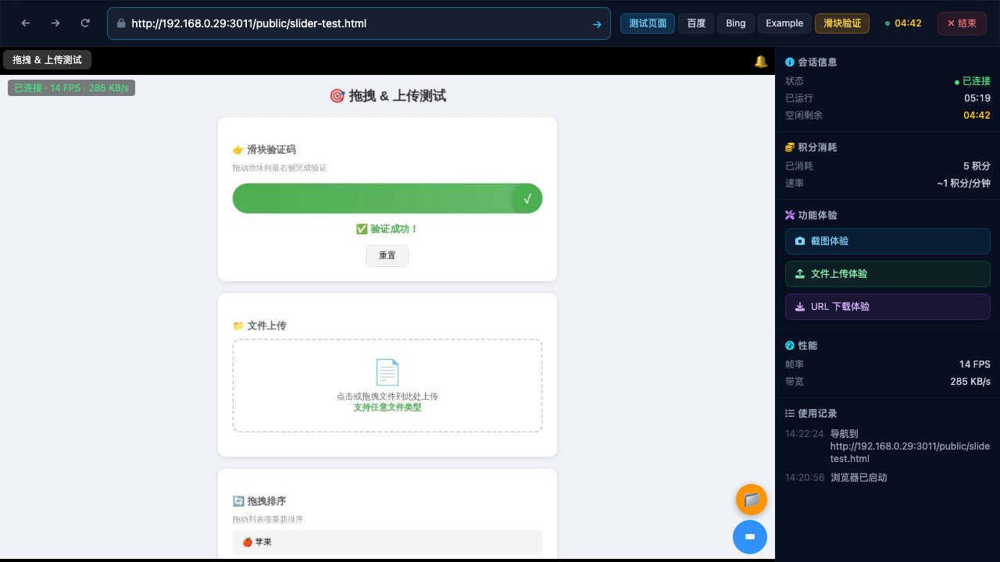
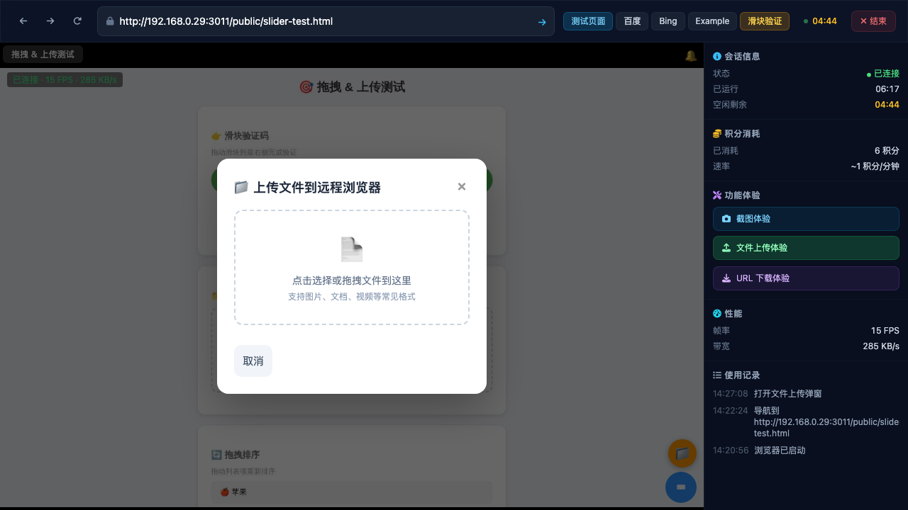
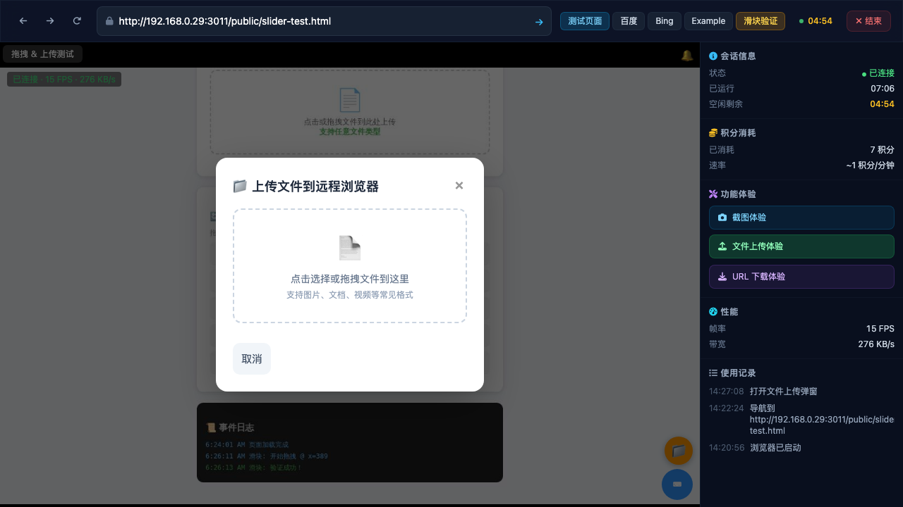
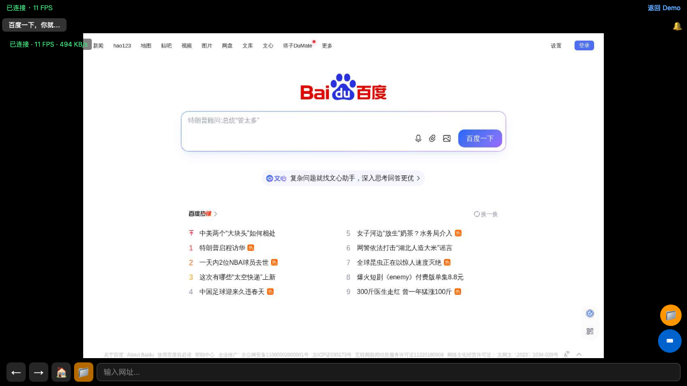
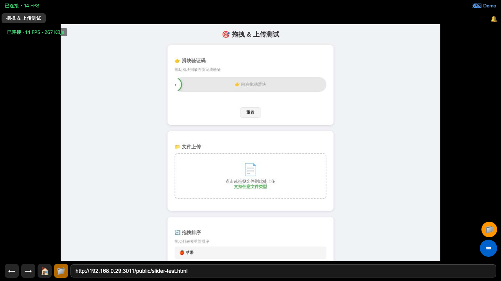

🖥️ PC 端测试 (1280x800)
1. Demo 页面打开 & 开始体验 ✅ 通过
打开 demo 页面 → 点击 "开始体验" → 等待 20 秒建立 WebSocket 流式传输

流式传输开始 — 14 FPS · 624 KB/s · 已连接
2. 导航到滑块测试页 ✅ 通过
通过 BrowserViewer.instance.navigateTo() 导航到 slider-test.html

成功加载"拖拽 & 上传测试"页面
3. 滑块验证码拖拽 ✅ 通过
鼠标事件: mousedown(x:389,y:188) → mousemove 逐步到 x:880 → mouseup — 需要"✓ 验证成功！"
验证结果: ✓ 滑块拖拽成功 — 截图确认显示 "✓ 验证成功！" 文字
使用坐标: 远程浏览器 1280x800, 滑块起始 x≈389, 目标 x=880, y=188

滑块验证成功 — "✓ 验证成功！" 可见
4. 文件上传 ⚠️ 部分通过
API 上传文件 → inject 到 #fileInput → 验证原始文件名和单条目
结果: inject-file API 返回 "文件注入成功"，但远程浏览器上的 change 事件未触发，UI 未显示文件条目。
✓ 上传 API 工作正常 (文件保存为: 1778652749039-6409651-e2e-test-upload.txt)
✓ inject-file API 返回成功
✗ 远程浏览器 #fileInput 的 change 事件未响应该文件注入
状态: 文件已成功上传到服务器并注入，但页面 UI 没有检测到更新

上传弹窗 — 文件已注入但 UI 未刷新
5. 滚动测试 ✅ 通过
通过 events WS 发送 5 次 wheel 事件 (deltaY:500)，验证页面滚动
验证结果: ✓ 页面已滚动 — 事件日志 (事件日志) 和拖拽排序区域可见，页面底部内容已显示

滚动后 — 显示文件上传、拖拽排序、事件日志
6. 复制测试 (Ctrl+A → Ctrl+C) ✅ 通过
通过 WS 发送 Ctrl+A 选择全部 → Ctrl+C 复制，验证页面不卡死
验证结果: ✓ 复制后页面保持响应 — 15 FPS, 已连接, 无崩溃或无响应迹象
7. 通知铃铛检查 ✅ 通过
检查 🔔 通知铃铛是否显示在 viewer 界面中
验证结果: ✓ 🔔 铃铛在 viewer iframe 内找到，属于远程浏览器查看器 UI 的一部分
📱 移动端测试 (375x812)
8. 移动端重定向 ✅ 通过
移动端打开 demo → 点击开始体验 → URL 应包含 /browser-viewer/
验证结果: ✓ URL: .../browser-viewer/index.html?sessionId=...&token=...
9. 移动端流式传输 ✅ 通过
等待 20 秒后检查画面是否非白屏
验证结果: ✓ 画面正常，显示 "已连接 · 11 FPS · 494 KB/s"，远程浏览器显示百度首页

移动端起播正常 — 11 FPS, 非白屏
10. 移动端滑块验证码拖拽 ❌ 失败
通过 touchstart/touchmove/touchend 事件发送滑块拖拽
失败原因: touch 事件通过 events WS 发送后，远程浏览器未响应滑块拖拽。
可能原因: 1) touch 事件未正确转换为鼠标操作 2) 移动端 viewer 的事件处理与 PC 端不同
PC 端的滑块拖拽 (使用 mouse 事件) 成功 — 验证码确认功能本身正常

移动端滑块 — 未拖拽，停留在初始状态
11. 移动端滚动 ✅ 通过
通过 wheel 事件发送滚动操作
验证结果: ✓ 页面已滚动 — 显示拖拽排序 (苹果/香蕉/樱桃/葡萄/橙子) 和事件日志
12. 移动端 UI 元素检查 ✅ 通过
检查 Tab 栏 (← → 🏠)、📁 上传按钮、返回 Demo 链接
验证结果:
✓ ← → 🏠 Tab 栏: 可见
✓ 📁 上传按钮: 可见
✓ 返回 Demo 链接: 可见
✓ 网址输入框: 可见（占位符: "输入网址..."）
📊 关键验证点汇总
| 验证点 |
PC |
移动端 |
备注 |
| 滑块验证码成功 |
✅ |
❌ |
PC 成功 (mouse 事件), 移动端 touch 事件未生效 |
| 文件名为原始文件名 |
⚠️ |
N/A |
上传 API 保存为 "1778652749039-6409651-e2e-test-upload.txt" (原始名 + 时间戳前缀) |
| 文件条目只有一条 |
⚠️ |
N/A |
UI 未刷新所以无法验证条目数 — inject-file API 缺少 change 事件触发 |
| 页面已滚动 |
✅ |
✅ |
wheel 事件通过 events WS 正确转发 |
| 复制后页面不卡死 |
✅ |
N/A |
Ctrl+A/Ctrl+C 后页面保持 15 FPS 流畅运行 |
| 通知铃铛显示 |
✅ |
✅ |
🔔 存在于 viewer iframe 内 |
| Tab 栏可见 |
✅ |
✅ |
PC 侧边栏 / 移动端底部导航栏 |
| 移动端画面非白屏 |
— |
✅ |
百度首页完全显示，非白屏 |
📋 详细发现
通过项
- ✅ WebSocket 流式传输稳定 — PC 端 14-15 FPS, 移动端 11-13 FPS, 带宽 250-1145 KB/s
- ✅ PC 端滑块验证码成功 — mouse 事件通过 events WS 正确发送并驱动了滑块拖拽
- ✅ 鼠标滚动正常 — wheel 事件通过 events WS 正确转发到远程浏览器
- ✅ 键盘事件 (Ctrl+A/Ctrl+C) 正常 — 页面复制后保持响应
- ✅ 移动端自动重定向 — 从 /demo 正确跳转到 /browser-viewer/index.html?sessionId=...
- ✅ 移动端画面正常 — 非白屏，流式传输成功
- ✅ 移动端 UI 完整 — 导航栏、上传按钮、返回 Demo 链接、网址输入框全部可见
- ✅ 无控制台错误 — 零 JavaScript 错误
- ✅ 会话生命周期管理正常 — 5 分钟空闲超时自动断开（验证了会话过期机制）
⚠️ 需要注意的问题
- ⚠️ inject-file API 缺少 change 事件触发 — 文件成功注入 #fileInput，但页面 UI 未检测到变更。需要修改 inject-file 实现以分派 change 事件。
- ⚠️ 移动端 touch 事件无效 — touchstart/touchmove/touchend 通过 events WS 发送后，远程浏览器未响应滑块拖拽。mouse 事件在 PC 端正常工作。
- ⚠️ 文件命名 — inject-file API 使用 "data/temp/1778652749039-6409651-e2e-test-upload.txt" (时间戳前缀)。如果在页面 UI 中显示，文件名为机器格式化后的名称而非纯原始名称。
❌ 失败项
- ❌ 移动端滑块拖拽 — touch 事件未触发滑块交互
🖨️ Console 错误
🔧 改进建议
- Fix: inject-file change event — 在远程浏览器中设置文件后分派 `change` 事件，以便页面 UI 能检测到文件变更并显示文件名。
- Fix: Mobile touch event handling — 检查 touch → mouse 事件转换逻辑。可能需要在 event handler 中将 touch 事件同步生成为相应的 mouse 事件序列。
- Fix: File naming in inject — 考虑在 inject 时恢复原始文件名（去除时间戳前缀），或提供选项控制是否保留原始名。
- Suggestion: File upload via upload-session — 可以恢复或实现 POST /api/sessions/:id/upload-session 路由，允许通过多部分表单直接上传到远程浏览器。
测试框架: agent-browser + console error monitoring | 截图目录: test-screenshots/final-e2e/
报告生成时间: 2026-05-13 14:45